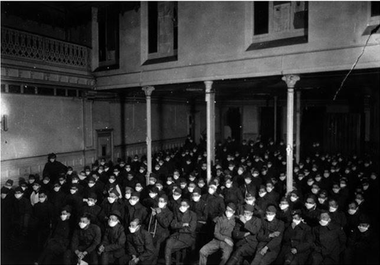

« Les masques, ça ne sert à rien ! », nous serinaient il y a peu nos gouvernants, alors même que nous étions en déficit majeur de ce simple accessoire sauveur de vies et que nous avions assisté impuissants à la désintégration de l’usine bretonne qui nous approvisionnait jusque-là.
Ah, le masque ! Que de sens n’a-t-il pas et combien de causes, justes ou fausses, a-t-il servi. À quels objectifs, cachés ou affichés, n’a-t-il pas obéi ?
C’est complexe, un masque. Le masque, c’est d’abord cet accessoire que l’on portait dans le théâtre grec antique, dont le rôle était d’exalter les sentiments excessifs, la joie, la fureur, la terreur, le ridicule, la peur, la grâce. Son origine remonterait peut-être à Mycènes où on le moulait sur le visage des morts, afin de conserver d’eux une dernière image. Pour Suidas, ce serait le poète Hoerile qui en serait l’auteur, tandis que pour Horace les premiers masques hideux auraient été imaginés par Eschile pour ses Euménides. Athénée, quant à lui, prétendit que fut un acteur de Mégare qui inventa les masques comiques des valets.
Allez donc savoir ! Toute civilisation n’a-t-elle pas les siens ?
Que dire des terrifiants masques des sorciers africains dont le but est d’impressionner, afin de soumettre à sa volonté ? Le masque, cela fait travailler l’imaginaire.
Mais le Beau n’en est pas exclu. À preuve les somptueux masques du carnaval de Venise qui inspirent la beauté, la pureté, l’opulence.
Le masque, c’est aussi l’apparence qu’on veut donner, ce qui sous entend la tromperie. Et il m’étonnerait fort que l’on puisse me reprocher de prétendre que nos politiciens ne nous présentent que des masques dont le rôle unique est de nous persuader. Ils n’ont pas besoin de masques en papier, ils savent travailler comme de bons comédiens les traits de leur visage qui dès lors leur sert de masque. Le masque, c’est donc l’apparence trompeuse sous laquelle on s'efforce de cacher ses vrais sentiments et ses vraies intentions. Mais est-on découverts qu’on jette le masque. Et aujourd’hui, le masque est tombé. Tout de même ! Que nos politiques nous présentent tant de visages-masques pour nous parler des masques médicaux a quelque chose d’insensé.
Un médecin de la peste au XIVème siècle
Car ce qui nous intéresse ici, c’est l’usage médical du masque. Et son usage est ancien. Je ne sais si l’usage du masque médical était connu dans l’Antiquité, mais au Moyen Age, nous avons la certitude de son emploi. Jean le Bel, Au XIVè siècle, nous raconte comment durant la grande peste les médecins de l’époque, par peur de la contamination, évitaient de s’approcher des malades des hôpitaux tenus par les religieux, et portaient des masques à bec pointu et des costumes censés les protéger. Les prêtres donnant aux mourants l’extrême onction se costumant de la même façon
Quant aux lépreux, peut-être peut-on les considérer comme masqués, car soustraits à l’œil du public puisqu’en l’absence de traitement on les exilait dans des léproseries, ceux qui les y conduisaient se couvrant entièrement de tissus, visage compris, qu’ils brulaient ensuite.
Il y a un siècle, durant la grippe espagnole, l’usage du masque devint généralisé, particulièrement aux États-Unis, tant dans la société civile que militaire. Et pour cause : alors que les médecins désemparés, sans information, sans aide, devaient faire face à l’épidémie comme ils le pouvaient, une infirmière sur quatre en mourait. Aussi en décembre 1918 à Seattle, les forces de l'ordre furent équipées en masques, et les poinçonneurs avaient ordre de ne pas laisser monter les passagers qui n’en étaient pas munis.
À défaut de masques, la distanciation sociale fut utilisée avec des résultats des plus satisfaisants. À Saint Louis, le Dr Max Starkloff réussit sa mise en place en limitant le nombre de personnes dans les attroupements et en fermant les écoles.
Militaires, fonctionnaires, travailleurs de tous bords furent fortement incités à porter le masque, comme l’illustrent les photos ci-dessous extraites d’un super site que je vous invite à visiter1.
Des masques chez les civils
A Mill Valley , en Californie, une femme portant une pancarte avec l’inscription « Portez un masque ou vous irez en prison ». Les transports en commun ne laissaient pas entre les gens non masqués.
CONSEILS POUR SE PROTÉGER DE LA GRIPPE
Des masques pour les personnels soignants
La Croix rouge en activité à saint Louis dans le Missouri et à Boston
Des masques pour les militaires
LA Seattle, le 39ème régiment en route pour la France

Et à Royat en France le cinéma à l’hôpital militaire américain
Des masques pour les travailleurs
On rappellera aussi que depuis quelques décennies, les Japonais, champions de l’hygiène, faisant des émules dans d’autres régions asiatiques, ont adopté l’usage du masque pour ne pas contaminer autrui même en cas de rhume.
Et on a osé dans les débuts de la crise du covid 19 nous dire que les masques ne servaient à rien ? Je reste sidérée par le manque de références historiques de nos gouvernants. À quoi servent donc les leçons de l’Histoire ? À quoi sert la notion d’anticipation ?


Partager cette page